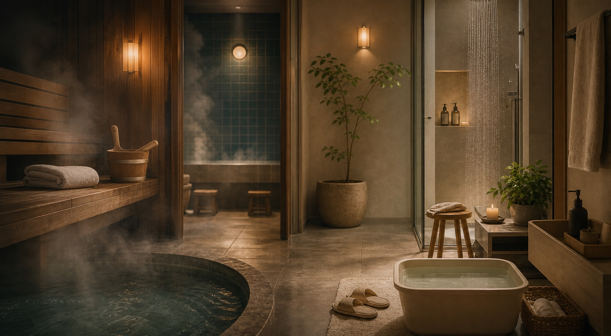

풍경과 재고를 함께 봅니다.
지금 판정이 준비된 온천 숙소와 당일온천이 많은 지역부터 둘러보세요.
온천수로 찾기
직수인가,
직수인가,
무엇을 더했는가.
복잡한 일본어 표기는 내부 데이터에 남기고, 사용자는 방식과 조건을 두 줄로 이해할 수 있게 정리합니다.
바스타임의 확인 기준
인용하지 않고,
인용하지 않고,
직접 읽고 판정합니다.
공식 정보와 공개 후기를 분리해 읽고, 근거가 확인된 사실과 방문 전에 다시 볼 조건을 나눠 표시합니다.
판정 방법 읽기